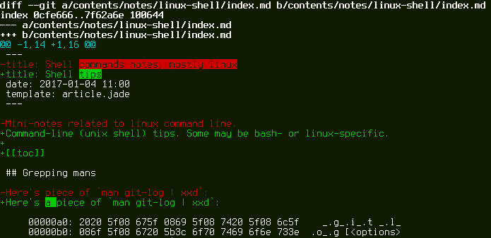

git tips
Bus factor ¶
http://zgrossbart.github.io/busfactor/
Useful aliases ¶
[alias]
hist = log --pretty=format:\"%C(auto)%h %ad %s%d [%an]\" --graph --date=short
root = rev-parse --show-toplevel
Basicaly the same as git hist, if you’re not the machine owner:
$ git log --all --oneline --graph --decorate=short
Highlighting differences of changed lines ¶
Git congrib directory has a script for that: diff-highlight
(/usr/share/git-core/contrib/diff-highlight/diff-highlight).
To use it, add the following to your ~/.gitconfig:
[pager]
log = diff-highlight | less -SR
show = diff-highlight | less -SR
diff = diff-highlight | less -SR
Result:

Of course, you can always use git-diff --color-words=. or something
like that.
HTTP proxy and self-signed certificates ¶
[http]
sslVerify = true
[http "https://weak.example.com"]
sslVerify = false
proxy = proxy.example.com:3128
git grep configuration ¶
[color]
grep = auto
[grep]
lineNumber = true
[color "grep"]
filename = magenta
linenumber = green
function = yellow
Seldom known commands and features ¶
Mainly because they’re seldom needed?
git clean -fxd
git config merge.log 9000
git instaweb
git notes
git rerere
git whatchanged
git gc --aggressive